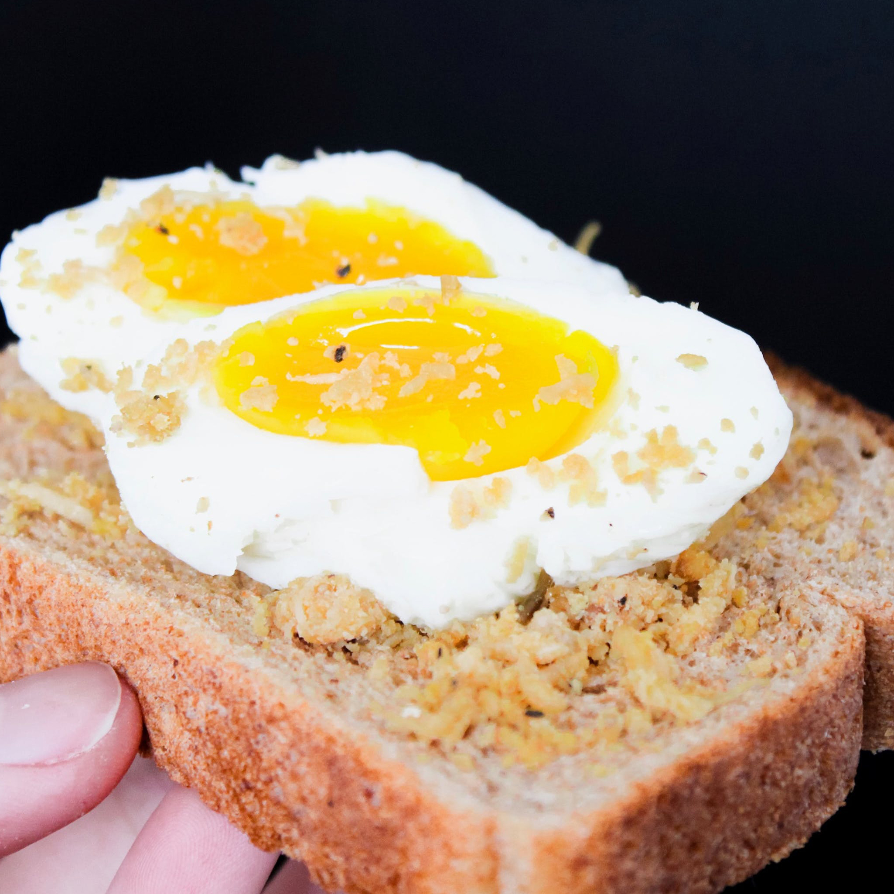

You take his second offering and eat the egg. It's slightly different from the last one you had but it tastes just as amazing, if not better!! Wow! You don't want to eat too much egg though. You can leave now, satisfied with your meal, or ask for more egg.